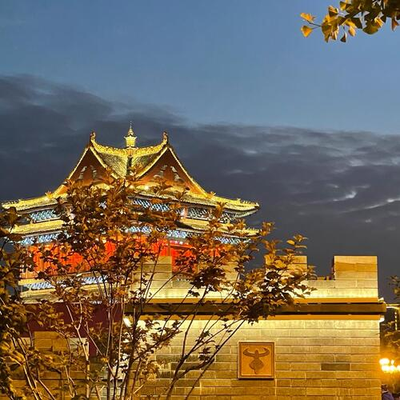

I am 24 years old and I come from the northern city of China. My hobby is photography, I like to capture a lot of beautiful scenery.
I love photography. I love recording. When I see something beautiful, I want to document it.This is a picture taken before I left my hometown. This is the landmark of my hometown, called "GuLou".
